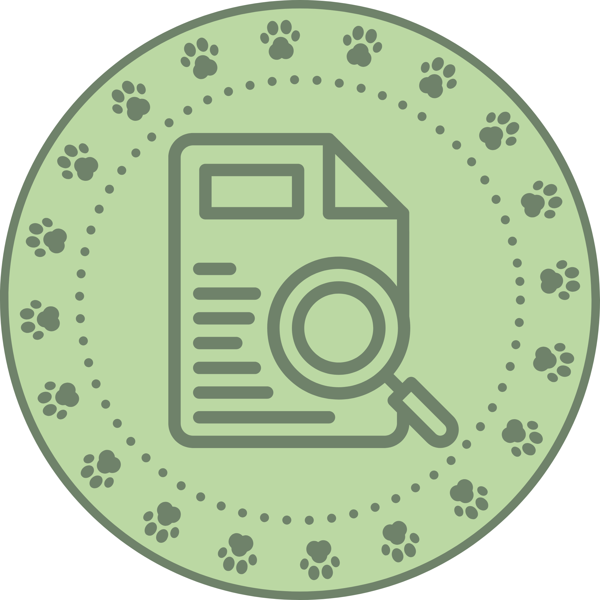
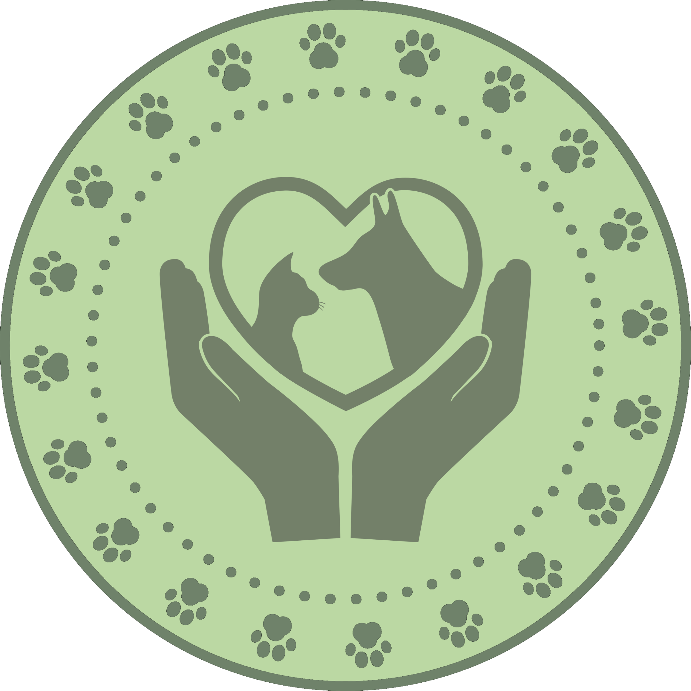
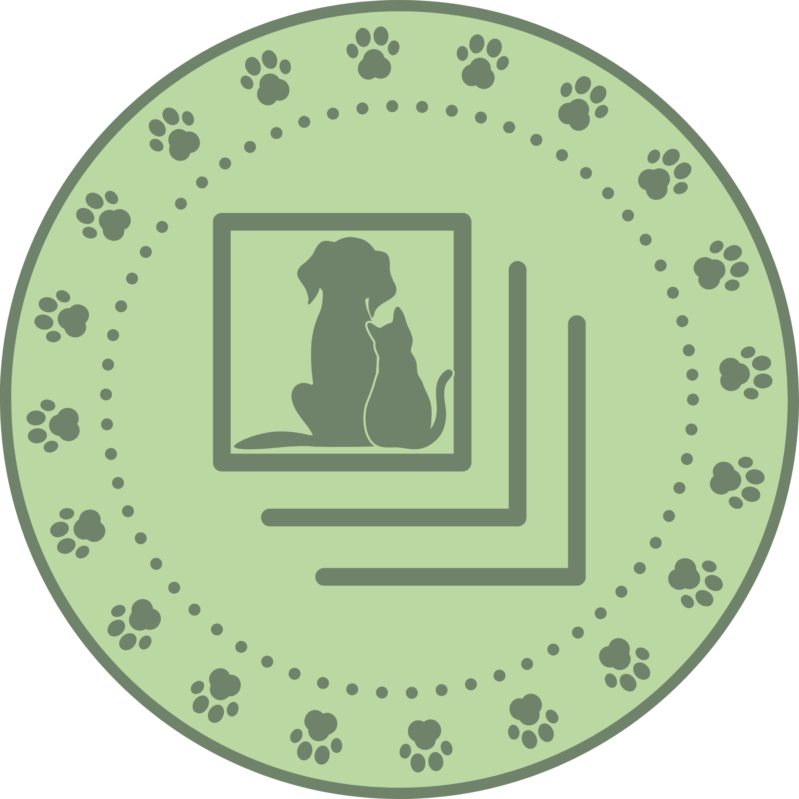

More than Pets — Your Companions.
Here at The ComPawnions, every paw matters. Whether you’re Team Cat or Team Dog, we’re here to make your journey with your fur-iend even more special!

Paws and Know

Services

Gallery